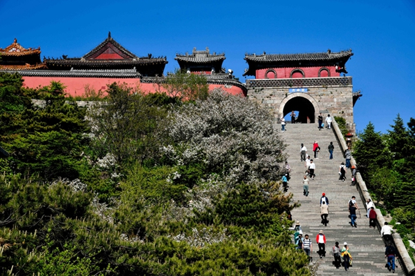
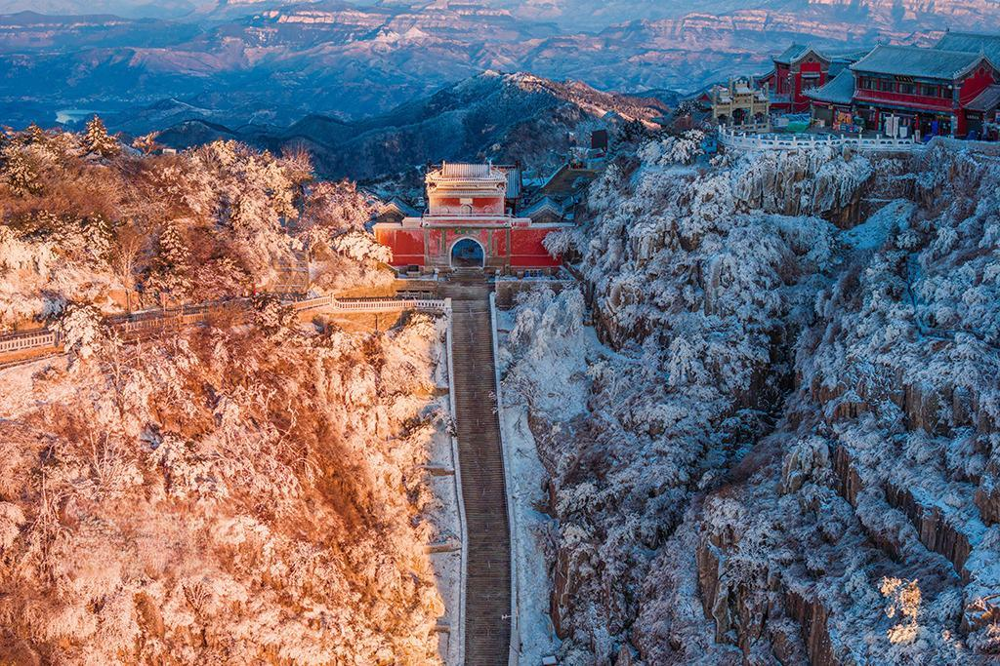

Veils of Granite & Pine
Mount Tai's majestic presence is famous worldwide, yet its soul often reveals itself in the margins: side paths where lichen softens each step, and small halls guard tablets layered with centuries of devotion. These routes demand patience—and reward you with silence rare on a peak of such renown.
Walk at first light when cloud fills the valleys like a slow tide. The air turns cool and thin; each turn opens a new frame of ridgeline and sky. This is hiking as contemplation—movement aligned with the mountain's ancient rhythm.
Stations of Memory Along the Stone Way
Many lesser-known temples along Mount Tai served as rest points for scholars, monks, and imperial processions. Their architecture—grey tile, carved eaves, courtyards of compacted earth—speaks to a craft tradition sustained across dynasties. Pause at an incense bowl still warm from morning offering; the moment feels both intimate and infinite.
"To climb Tai is to read the sky in layers—each terrace a verse, each gate a breath held between earth and heaven."
Responsible travel matters: stay on marked trails, carry out what you carry in, and honour active sites with quiet respect. Local guides can illuminate inscriptions and seasonal closures that maps alone cannot convey.
Planning Your Ascent Off the Beaten Track
Combine your ethereal mountain hours with nights in Tai'an proper—recover with restorative food, soak in the city's unhurried evenings, then return to the trails renewed. Check weather windows, especially in winter, when ice can transform familiar steps into a different kind of journey.
